Es el primer santuario que puedes encontrar una vez que entras al territorio de la torre del cañón. Está a la entrada del cañón, al sur del camino que te lleva a la Posta.
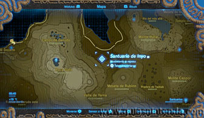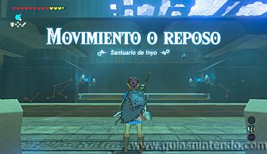
El objetivo aquí dentro es conseguir que las esferas entren en los respectivos agujeros. Hay varios modos de conseguirlo, puedes paralizar las plataformas para disparar una flecha a la esfera o paralizar directamente la esfera y después golpearla.
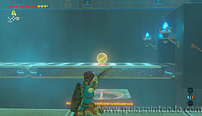
En la siguiente sala tendrás que hacer lo mismo, pero primero acaba con los miniguardianes con flechas. Si la esfera se cae y la pierdes, volverá a aparecer otra a los pocos segundos, así que no tendrás ningún problema es conseguir tu objetivo.
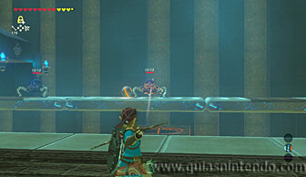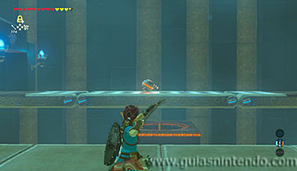
En la tercera sala podrás coger el cofre usando el módulo del imán (desde la cinta transportadora). Llévalo a un lugar donde puedas abrirlo tranquilamente (conseguirás un ópalo).
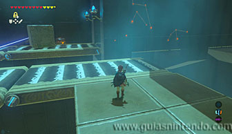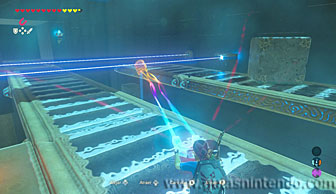
Después coge la esfera que hay antes de las cintas y llévala asta el siguiente saliente, para pasar el primer rayo debes esperar a que un gran bloque lo tape durante unos segundos.
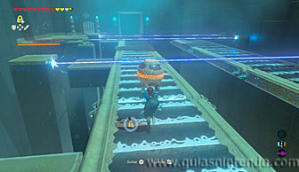
Desde allí paraliza el primer rayo de los dos que quedan y coge la esfera. Ahora pasa por el primer rayo antes de que se recupere y espera a que el segundo esté tapado para poder pasar. Ya da igual que termine el efecto paralizador, puedes quedarte andando entre los dos rayos hasta que el bloque llegue a tu posición.
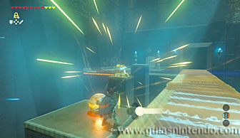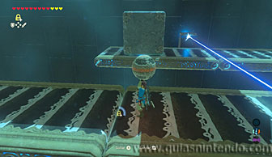
Después deja la esfera en el agujero y se abrirá la puerta de salida. Cuando llegues al altar del santuario podrás examinarlo para obtener un símbolo de valía.
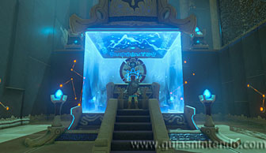